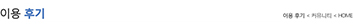
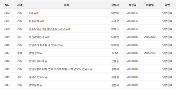
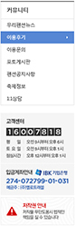
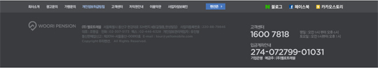
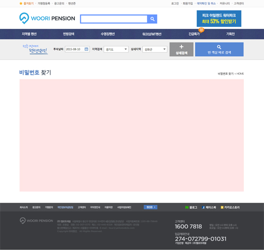
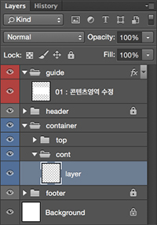
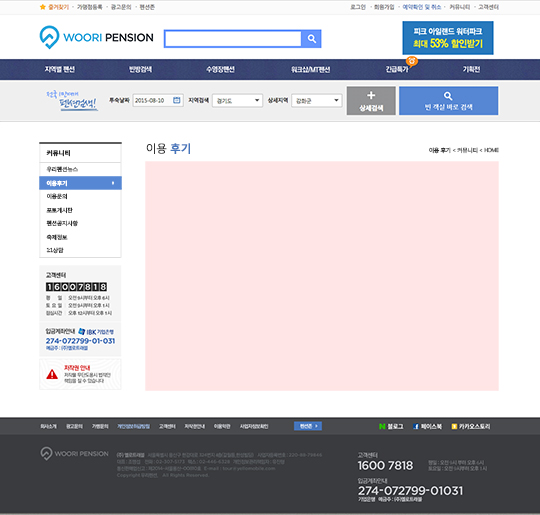
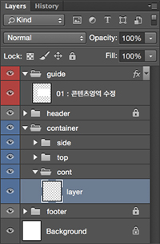

파일 규칙
> wooripension > 파일 규칙
2015.08.26. 담당자 : 민소라
DESIGN
기존 파일은 유지하고 새로 파일을 생성해 해당 파일 이름 뒤에 아래의 파일명 규칙을 참고하여 관리한다.
파일명
일반적으로 파일명은 메뉴명+날짜(전달일)로 파일명을 구성한다.
ex) service_20150801.psd
파일 전달일에 파일 수정이나 업데이트가 생길 시, 아래와 같이 v(version)+숫자로 구성한다.
ex) service_20150801_v.1.psd
파일 전달일이 아닌 다른 날짜의 경우에는 해당 날짜로 변경해 재전달하고 버전은 초기화한다.
ex) service_20150801.psd
파일 전달일에 파일 수정이나 업데이트가 생길 시, 아래와 같이 v(version)+숫자로 구성한다.
ex) service_20150801_v.1.psd
파일 전달일이 아닌 다른 날짜의 경우에는 해당 날짜로 변경해 재전달하고 버전은 초기화한다.
폴더 관리
폴더 분류는 다음의 규칙을 따른다.
디자인 폴더 정리는 기확안과 같은 경로로 정리하며, 작업 파일(psd)과 미리보기 파일(jpg)을 같은 폴더에 정리한다.
미리보기 파일(jpg)의 경우에는 전체적인 레이아웃이나 디자인 변경이 많은 경우에만 업데이트한다.
wooripension
디자인 폴더 정리는 기확안과 같은 경로로 정리하며, 작업 파일(psd)과 미리보기 파일(jpg)을 같은 폴더에 정리한다.
미리보기 파일(jpg)의 경우에는 전체적인 레이아웃이나 디자인 변경이 많은 경우에만 업데이트한다.
wooripension
-
menu name
- 01_service_20150801.psd
- 01_service_20150801.jpg
- 01_service_20150801_v.1.psd
- 01_service_20150801_v.1.jpg
-
menu name
- 01_service_20150801.psd
- 01_service_20150801.jpg
- 01_service_20150802.psd
- 01_service_20150802.jpg
- wp_guide01.psd : 공통 가이드 템플릿
- wp_guide02.psd : 공통 가이드 템플릿
psd 구성
현재 운영되고 있는 우리펜션의 레이아웃을 유지하며, 레이아웃이나 공통 디자인이 변경될 경우 해당 파일을 요청하여 수정하도록 한다.
아래에 제공되고 있는 파일을 기본으로 작업한다.
기본 레이아웃 : wp_guide01.psd
side가 있는 레이아웃 : wp_guide02.psd
psd 파일의 구성은 큰 단락으로 header / container / footer로 나눠져 있다.
header와 footer는 특별한 경우 외에는 변경하지 않으며, 신규 페이지 작업은 container 영역 안에서만 작업한다.
sub page는 기본 타입(type1)과 side가 있는 타입(type2)으로 총 2가지 타입으로 되어있으며, 아래의 표를 참고하여 작업한다.
side와 top 영역은 기본 틀을 사용하고 텍스트 수정만 가능하며, 콘텐츠 작업은 cont 영역(work space *)에서 작업한다.
type1(기본 타입)
type2(side가 있는 타입)
레이어 폴더 설명
아래에 제공되고 있는 파일을 기본으로 작업한다.
기본 레이아웃 : wp_guide01.psd
side가 있는 레이아웃 : wp_guide02.psd
psd 파일의 구성은 큰 단락으로 header / container / footer로 나눠져 있다.
header와 footer는 특별한 경우 외에는 변경하지 않으며, 신규 페이지 작업은 container 영역 안에서만 작업한다.
| header | ||
|---|---|---|
| container | top |  |
| cont |  | |
| side |  | |
| footer |  | |
sub page는 기본 타입(type1)과 side가 있는 타입(type2)으로 총 2가지 타입으로 되어있으며, 아래의 표를 참고하여 작업한다.
side와 top 영역은 기본 틀을 사용하고 텍스트 수정만 가능하며, 콘텐츠 작업은 cont 영역(work space *)에서 작업한다.
type1(기본 타입)
|  |
guide header container top cont work space * footer |
|  |
type2(side가 있는 타입)
|  |
guide header container side top cont work space * footer |
|  |
레이어 폴더 설명
guide
가이드 영역
작업된 영역 또는 부분 수정된 부분을 다음 작업자가 알아보기 쉽게 표시를 해주기 위한 레이어 폴더이다.
작업한 영역을 박스로 표시하고 레이어 파일 이름에 번호와 작업 부분에 대한 설명을 기입한다.
작업된 영역 또는 부분 수정된 부분을 다음 작업자가 알아보기 쉽게 표시를 해주기 위한 레이어 폴더이다.
작업한 영역을 박스로 표시하고 레이어 파일 이름에 번호와 작업 부분에 대한 설명을 기입한다.
header
상단 영역
기본 틀을 유지하고 특별한 경우를 제외하고 변경하지 않는 것을 원칙으로 한다.
기본 틀을 유지하고 특별한 경우를 제외하고 변경하지 않는 것을 원칙으로 한다.
container
본문 영역
top과 lnb는 기본 틀을 유지하고 텍스트 변경 위주로만 작업하며, cont 폴더 내에서 해당 콘텐츠 작업을 진행한다.
top과 lnb는 기본 틀을 유지하고 텍스트 변경 위주로만 작업하며, cont 폴더 내에서 해당 콘텐츠 작업을 진행한다.
side
사이드 영역
lnb 메뉴(서브 메뉴)와 고객센터 등을 포함하고 있는 영역이며,
사이드 영역은 필수 영역은 아니며 필요에 따라 사용 유무를 결정하면 된다.
lnb 메뉴(서브 메뉴)와 고객센터 등을 포함하고 있는 영역이며,
사이드 영역은 필수 영역은 아니며 필요에 따라 사용 유무를 결정하면 된다.
top
타이틀 영역
해당 페이지의 타이틀과 페이지 경로에 맞게 텍스트를 변경한다.
해당 페이지의 타이틀과 페이지 경로에 맞게 텍스트를 변경한다.
cont
콘텐츠 영역(내용 영역)
페이지에 대한 디자인과 텍스트를 직접적으로 작업하는 영역이며,
디자인은 해당 영역에 맞게 폴더로 작업하고 작업 완료 후 불필요한 파일과 폴더는 삭제하여 정리한다.
페이지에 대한 디자인과 텍스트를 직접적으로 작업하는 영역이며,
디자인은 해당 영역에 맞게 폴더로 작업하고 작업 완료 후 불필요한 파일과 폴더는 삭제하여 정리한다.
footer
하단 영역
기본 틀을 유지하고 특별한 경우를 제외하고 변경하지 않는 것을 원칙으로 한다.
기본 틀을 유지하고 특별한 경우를 제외하고 변경하지 않는 것을 원칙으로 한다.
MARK UP
HTML 파일은 html 폴더와 wooripension 폴더에서 관리하며, css와 image 파일은 cdn.wooripension 폴더에서 공용으로 관리한다.
파일명
HTML 작업시
CDN 작업시 : cdn.wooripension
html
마크업 작업 영역
파일명은 디자인 파일과의 작업 확인을 편리하게 하기 위해, 디자인 파일명과 동일하게 하는 것을 원칙으로 한다.
디자인 파일명의 규칙은 아래와 같다.
메뉴명+날짜(디자인 파일명의 날짜와 동일)로 파일명을 구성한다.
ex) service_20150801.html
파일 전달일에 파일 수정이나 업데이트가 생길 시, 아래와 같이 v(version)+숫자로 구성한다.
ex) service_20150801_v.1.html
파일명은 디자인 파일과의 작업 확인을 편리하게 하기 위해, 디자인 파일명과 동일하게 하는 것을 원칙으로 한다.
디자인 파일명의 규칙은 아래와 같다.
메뉴명+날짜(디자인 파일명의 날짜와 동일)로 파일명을 구성한다.
ex) service_20150801.html
파일 전달일에 파일 수정이나 업데이트가 생길 시, 아래와 같이 v(version)+숫자로 구성한다.
ex) service_20150801_v.1.html
wooripension
개발 작업 영역
특별한 경우를 제외하고 개발 작업 영역(wooripension 폴더)의 파일명을 변경하거나 파일을 이동하지 않는다.
작업 되어 있는 파일 구조에서 작업하고 불가피하게 파일 구조를 바꿔야하는 경우에는
프론트 엔드 개발 담당자와 상의 후 변경 요청을 한다.
특별한 경우를 제외하고 개발 작업 영역(wooripension 폴더)의 파일명을 변경하거나 파일을 이동하지 않는다.
작업 되어 있는 파일 구조에서 작업하고 불가피하게 파일 구조를 바꿔야하는 경우에는
프론트 엔드 개발 담당자와 상의 후 변경 요청을 한다.
CDN 작업시 : cdn.wooripension
css
CSS 작업 영역
파일 상단에 메뉴명+날짜(디자인 파일명의 날짜와 동일)을 기입해 해당 파일의 업데이트를 주석처리 한다.
주석은 디자인 사안의 버전과 맞춰 작업하는 것을 원칙으로 한다.
파일 상단에 메뉴명+날짜(디자인 파일명의 날짜와 동일)을 기입해 해당 파일의 업데이트를 주석처리 한다.
주석은 디자인 사안의 버전과 맞춰 작업하는 것을 원칙으로 한다.
/* 20150801_v.1 */
img
이미지 파일 영역
우리펜션 이미지는 이미지 스프라이트 방식을 사용하지 않고 이미지를 개별적으로 저장하여 사용한다.
이미지 폴더는 각각 메뉴명에 맞게 폴더로 나누어 분류되어 있으며, 공통요소는 common 폴더에 추가하고
각 메뉴와 페이지에 맞게 해당 폴더를 추가하거나 기존 폴더에 이미지를 추가하여 작업한다.
이 전에 사용된 비슷한 이미지가 있을 시 담당 디자이너와 상의 후 사용한다.
우리펜션 이미지는 이미지 스프라이트 방식을 사용하지 않고 이미지를 개별적으로 저장하여 사용한다.
이미지 폴더는 각각 메뉴명에 맞게 폴더로 나누어 분류되어 있으며, 공통요소는 common 폴더에 추가하고
각 메뉴와 페이지에 맞게 해당 폴더를 추가하거나 기존 폴더에 이미지를 추가하여 작업한다.
이 전에 사용된 비슷한 이미지가 있을 시 담당 디자이너와 상의 후 사용한다.
js
스크립트 파일 영역
작업을 하면서 사용되거나 추가할 플러그인을 plugin 폴더에 원본을 변경하지 않고 추가한다.
플러그인에 사용된 css를 변경하고자 할 경우에는 style.css 파일의 하단에 오버라이딩해서 사용하는 것을 원칙으로 한다.
직접 작업한 스크립트나 플러그인 실행문의 경우에는 따로 파일을 만들지 않고, 해당 작업된 파일의 하단에 넣고
날짜(작업일)와 스크립트에 대한 간략한 설명을 덧붙여 주석처리 한다.
작업을 하면서 사용되거나 추가할 플러그인을 plugin 폴더에 원본을 변경하지 않고 추가한다.
플러그인에 사용된 css를 변경하고자 할 경우에는 style.css 파일의 하단에 오버라이딩해서 사용하는 것을 원칙으로 한다.
직접 작업한 스크립트나 플러그인 실행문의 경우에는 따로 파일을 만들지 않고, 해당 작업된 파일의 하단에 넣고
날짜(작업일)와 스크립트에 대한 간략한 설명을 덧붙여 주석처리 한다.
<!-- 2015-08-01 selectric plugin 실행문 -->
<script>
$(function() {
$('.cover_select select').selectric();
});
</script>